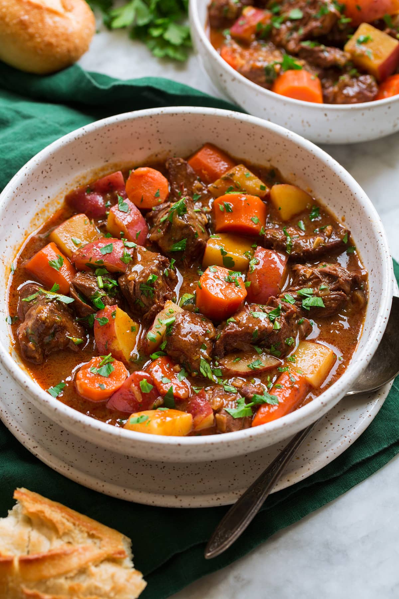

Slow Cooker Beef Stew

Description
This stew recipe – or Slow Cooker Beef Casserole if you prefer –
is, quite simply, satisfaction in a bowl. It’s packed with flavour,
chunky vegetables and rich gravy, warming the cockles and brimming
with goodness.
Ingredients
This is for 6 servings at 386kcal each:
- 1kg beef cubes
- 3 tbsp plain flour
- 2 tbsp sunflower oil
- 1 onion
- 3 cloves garlic
- 600ml beer
- 3 carrots
- 1/2 swede
- 2 beef stock cubes
- 3 tbsp tomato puree
- 3 tbsp worcestershire sauce
- salt and ground black pepper
Steps
- Coat beef in plain flour
- Brown beef in a pain until its browned and golden.
- Add all ingredients into slow cooker pot, including browned beef.
- Put the lid on and cook, HIGH for 5-6hrs or on LOW for 8-9hrs.